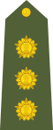
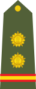

The Indian Army is the land-based branch and the largest component of the Indian Armed Forces. It is commanded by the Chief of Army Staff (COAS), who is a four-star general. Two officers have been conferred with the rank of field marshal, a five-star rank, which is a ceremonial position of great honour. The Indian Army originated from the armies of the East India Company, which eventually became the British Indian Army, and the armies of the princely states, which finally became the national army after independence.
The units and regiments of the Indian Army have diverse histories and have participated in a number of battles and campaigns across the world, earning many battle and theatre honours before and after Independence.
The primary mission of the Indian Army is to ensure national security and national unity, defending the nation from external aggression and internal threats, and maintaining peace and security within its borders. It conducts humanitarian rescue operations during natural calamities and other disturbances
It was founded on 1 April 1895; 125 years ago. Its colours are Gold, red and black and soldiers march on tune - Quick: Qadam Qadam Badaye Ja, Slow: Samman Guard. The Indian Army celebrates Army Day on 15 January every year. The current Chief of the Army Staff (COAS) is General Manoj Mukund Naravane (PVSM, AVSM, SM, VSM, ADC) and Vice Chief of the Army Staff (VCOAS) is Lieutenant General Satinder Kumar Saini (AVSM, YSM, VSM). Notable commanders: Field Marshal K M Cariappa, OBE Field Marshal Sam Manekshaw, MC General K S Thimayya, DSO
Official Website: indianarmy.nic.in
A Military Department was created within the Government of the East India Company at Kolkata in the year 1776. Its main function was to sift and record orders relating to the Army that were issued by various Departments of the East India Company for the territories under its control. The British Indian Army was a critical force for the primacy of the British Empire both in India and across the world.
Besides maintaining the internal security of the British Raj, the Army fought in many other theatres: the Anglo-Burmese Wars, First and Second Anglo-Sikh Wars, First, Second and Third Anglo-Afghan Wars, First and Second Opium Wars in China, Abyssinia, and the Boxer Rebellion in China.
In the 20th century, the Indian Army was a crucial adjunct to the British forces in both world wars. 1.3 million Indian soldiers served in World War I (1914-1918) with the Allies, in which 74,187 Indian troops were killed or missing in action. In World War II Indian soldiers fought alongside the Allies. 87,000 Indian soldiers died in the war. By the end of the war it had become the largest volunteer army in history, rising to over 2.5 million men in August 1945
-
Major Conflicts Since Independence:
- First Kashmir War (1947)
- Annexation of Hyderabad (1948)
- Medical assistance during Korean War (1950-1953)
- Sino-Indian War (1962)
- Indo-Pakistani War of 1965
- 1967 Sino-Indian conflict
- Bangladesh Liberation War of 1971
- Siachen conflict (1984)
- Kargil war (1999)
- 2016 Surgical Strikes on Kashmir and the 2016-2018 India-Pakistan conflict
- United Nations peacekeeping missions
- Indo-China Doklam issue
The ethos of the Army is ingrained in all soldiers with an unwavering will to succeed, accepting their grave responsibility and an unbridled ability to give their lives for others; confident that in return the nation will look after them and their families. The motto of the Indian Army is "Service Before Self"
The selection process for entry into the army essentially determines his trainability, and the training process, especially in the recruit or cadet stage, instils military values in the entrant and gives him knowledge and skills to be an effective member of a fighting team.
Later, in-service training on courses and exercises, and day-to-day functioning in various postings and deployments reinforces military values and builds team-spirit, motivation self-confidence and morale. Soldiers learn these values in detail during Basic Combat Training, from then on they live them every day in everything they do - whether they're on the job or off.
The Ethos: Espirit-de-Corps, Spirit of Selfless Sacrifice, Valour, Non-discrimination, Fairness and Honesty, Discipline and Integrity, Fidelity, Honour and Courage, Death to Dishonour & Forthrightness.
| INDIAN ARMED FORCES | ||
|---|---|---|
| Rank | Shoulder Insignia | Equivalent NATO Code |
| Field Marshal (Honorary/Wartime Rank) |
OF-10 | |
| General (Held only by the Chief of the Army Staff) |
OF-9 | |
| Lieutenant General | OF-8 | |
| Major General | OF-7 | |
| Brigadier | OF-6 | |
| Colonel | OF-5 | |
| Lieutenant Colonel | OF-4 | |
| Major |  |
OF-3 |
| Captain |  | OF-2 |
| Lieutenant | OF-1 | |
| OTHER RANKS | ||
| Rank | Shoulder Insignia | Notes |
| Subedar Major | Risaldar Major in cavalry and armoured regiments. | |
| Subedar |  | Risaldar in cavalry and armoured regiments. |
| Naib Subedar | Naib Risaldar in cavalry and armoured regiments. Called Jemadar until 1965. | |
| Havildar | ||
| Naik | ||
| Lance Naik | ||
| Sepoy | NONE | |
The role of Women in the Indian army began when the "Indian Military Nursing Service" was formed in 1888, and nurses fought in World War I and II where 350 Indian Army nurses either died or were taken prisoner of war or declared missing in action, this includes nurses who died when SS Kuala was sunk by the Japanese Bombers in 1942. In 1992, the Indian Army began inducting women officers in non-medical roles.
On 19 January 2007, the United Nations first all female peacekeeping force made up of 105 Indian policewomen was deployed to Liberia. In 2014, India's army had 3 per cent women, the Navy 2.8 per cent and the Air Force, the highest, with 8.5 per cent women. In 2015 India opened new combat air force roles for women as fighter pilots, adding to their role as helicopter pilots in the Indian Air Force.